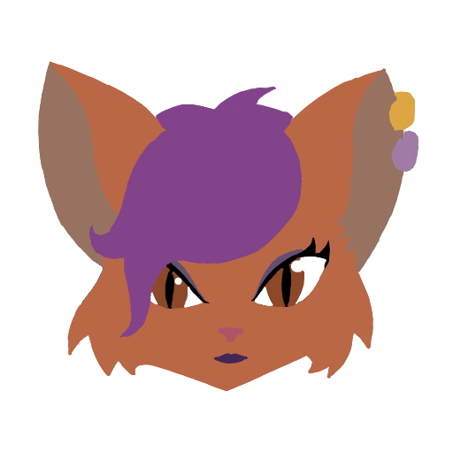
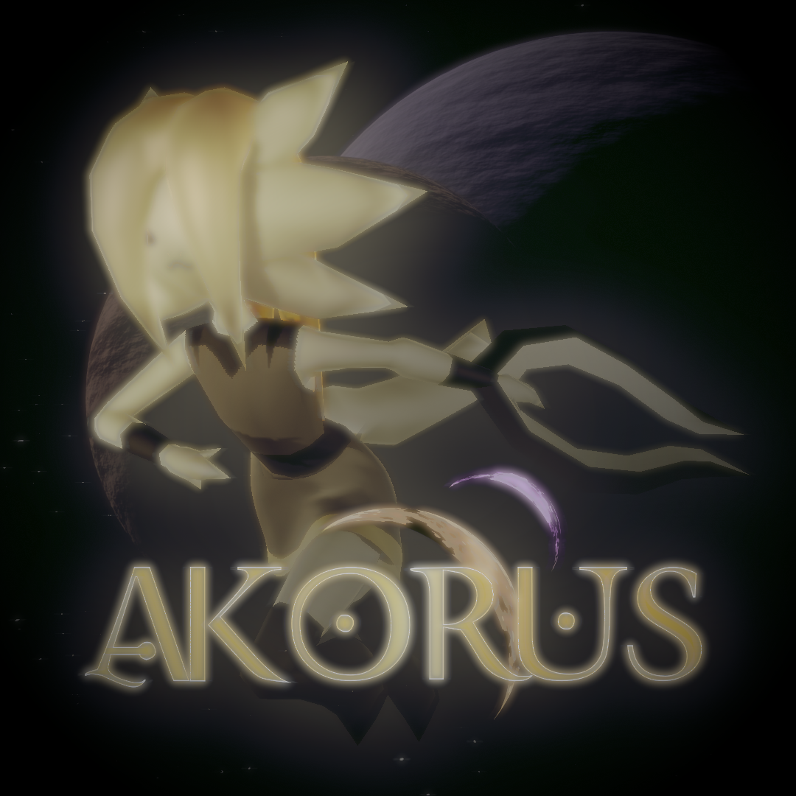
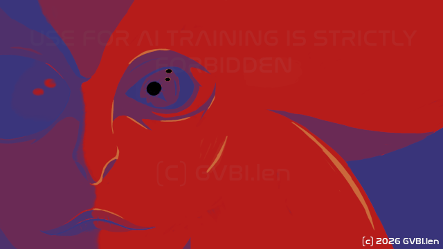
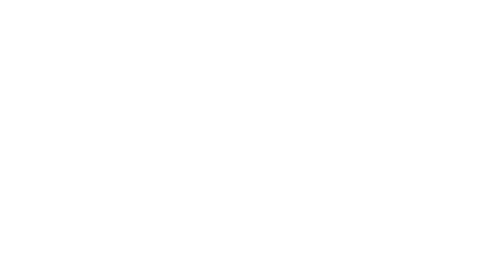

GVBI.len

Artist | Game Developer | Programmer
ArtStation | Email | GitHub
| Skill |
Sub Skill |
Skill Level |
| Game Development |
2D/UI Design |
☆☆☆☆ |
| 3D Design/Animation |
☆☆☆☆☆ |
| Audio |
☆☆☆☆ |
| Level Design |
☆☆☆☆☆ |
| Programming |
☆☆☆☆☆ |
| Game Programming |
Assembly |
☆☆ |
| C# |
☆☆☆ |
| GdScript |
☆☆☆☆☆ |
| Java |
☆☆☆ |
| Python |
☆☆☆☆☆ |
| Software Development |
Assembly |
☆☆ |
| C |
☆☆ |
| C# |
☆☆☆ |
| Java |
☆☆☆ |
| Python |
☆☆☆☆ |
Projects
Akorus

An old school role playing game inspired by Ultima and Phantasy Star Online.
Akorus is set in an alternate Solar System in which Saturn's celestial bodies are home to the Akori, a unique race on a mission to recover long forgotten artifacts across the galaxy.
A free demo will be available to play in 2027.

Geothera

Geothera is a 3D terrain generator.
The projects consists of two formats: A Godot 4.x addon for creating terrain meshes directly in the game engine, and a standalone application for creating meshes and heightmap textures to use in compatible software.
Both will be free to download soon.
Website designed by yours truly :3